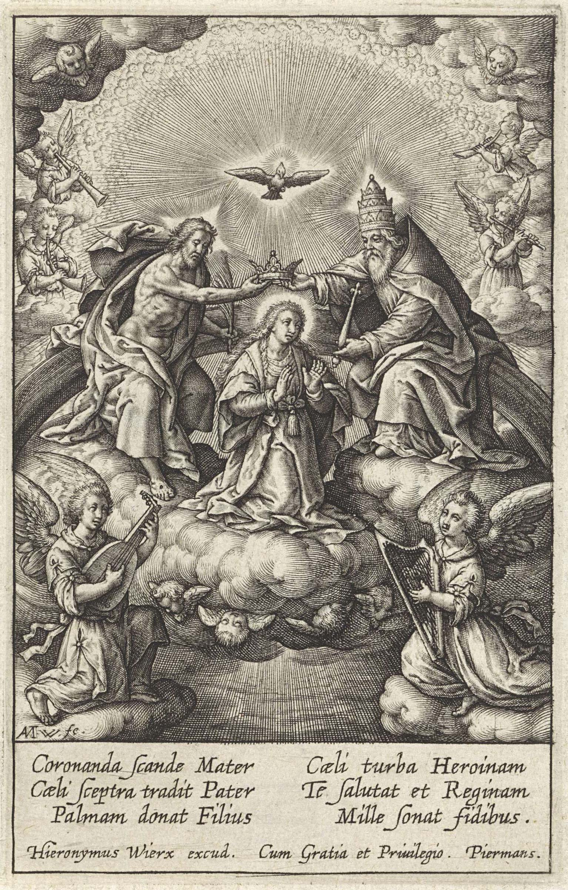

The Art and Architecture of St Andrew Church
For over 400 years, the structure of the Church of St Andrew has stood tall and graceful over its surroundings a landmark visible for miles in all directions. Fishermen from Bandra’s five colourias while far out at sea would use it as a beckoning signpost of home.

The sturdy walls, over five feet thick, support a steep roof of teak timbers, which would have been thatched at one time. There are reports of many cyclones and storms that did damage to the roof, which is not surprising for a roof perched high on an exposed seashore. From Jesuit and other accounts we do know that a cyclone on the May 16th 1618, caused extensive damage to many churches along the entire west coast, destroying the roof of the Church of St Andrew.
“…the church of the Jesuits (was) unroofed and gaped in clefts almost past repair. Nothing was more hideous than the destruction of the palm groves, thousands of palms were torn out by the roots, and some the wind lifted through the air like feathers and carried distances. The whole was like the ruin at the end of all things.”
History of the Jesuits by Cordara. Storm of 1618
The reconstructed roof was burnt when the Marathas invaded Bandora during the Maratha-Portuguese war of 1737-39. In the course of the invasion the church also lost its orginal bells, which were later replaced. The roof needed further work in 1764, 1823, 1864 and 1931. Parishioners recall two other cyclones that caused damage to the structure of the church. A major storm on October 16th 1940, and another equally violent storm on November 22nd 1948, when some portions of the roof lost their tiles and supporting members.
The Facade
The front facade of the church is ornamented simply. The cross atop the church was a conventional one in the early nineteenth century, but at some point was replaced with a life-size statue of Saint Andrew with the X-shaped cross in front. The storm of October 16th 1940, dislodged the statue and cross, which fell to the ground in pieces. After this, the church was graced once again with a conventional cross made of stone bracketed by two stone curlicues. A statue of the saint was placed in a niche on the front facade. When the church was extended and the new facade built, it was topped with a cross of masonry. The old stone cross and curlicues are today situated on the south side of the church compound.
In 1890 a wooden porch was built as an extension to the church to accommodate the increasing number of parishioners. This porch was removed in 1966 when the church was extended.
Planning of the Church
The planning of the church resembles the planning of other colonial Portuguese churches in Goa and Bombay. Unlike Roman churches which had a cruciform plan, Portuguese churches have largely been rectangular in plan with an axial arrangement of the various parts. The Church of St Andrew is designed symmetrically about an east-west axis, with the sanctuary at the west end.
The church is divided into the sanctuary, which houses the main altar from where the priest celebrates Mass and other services. The nave, the body of the church, is where the faithful are seated. In between the sanctuary and the nave is the narrow chancel with the two side altars.
The Sanctuary
The sanctuary houses the main altar, as well as the altar table. The sacristy, where the sacred vessels and vestments are kept, is located on the north side of the sanctuary and can be directly accessed through it. It is in the sacristy that the priests robe themselves, before entering the church for Mass and other services. According to legend, the sanctuary also houses the grave of Fr Manuel Gomes SJ, the “Apostle of Salsette” who died in 1590 and is credited with almost single handedly converting Bandra to Christianity.
The Chancel
The chancel is the area between the nave and the sanctuary, where the two original wooden side altars as well as the present marble baptismal font are located. The chancel is accessed directly from the nave or through two doors, one each on its northern and southern faces. The chancel leads to the sanctuary through an arched opening. In the early church, and up to 1966, there were four long wooden benches in the chancel for use by the faithful. Also, up to 1966 there was a wooden communion rail separating the nave from the chancel. The faithful would kneel at this rail to receive communion at Mass.
The Nave
The nave includes the original nave as well as the fifty foot extension which is slightly broader and which was added in 1966. Both these areas combined now seat approximately five hundred. The nave is accessed by three doors on the northern, three on the eastern and three on the southern wall. In 1935, the windows in the side walls were lowered to aid ventilation. The ceiling of the church is of teak boards. It was constructed in 1862 and at that time was hung with chandeliers. The choir loft is situated on an upper level at the eastern extremity of the nave. This is now being used as a temporary museum area to house church artifacts.
The Sanctuary and the Main Altar
The main altar was constructed in 1906 after the previous one had been destroyed by termites. The present one, which is made of wood and built on a brick base paved with marble, extends almost to the roof.
The life-size statue of St Andrew dominates the main altar. The Saint holds an X-shaped cross. Legend has it that when he was to be crucified, St Andrew asked that he not be hung upon a conventional cross, as he felt he was unworthy of dying on the same cross as his Master had been. Therefore an X-shaped cross was fashioned which has since been associated with St Andrew.
St Andrew is flanked by a statue of the Sacred Heart of Jesus on his right. On his left is a delicately fashioned statue of Our Lady that bears a small plaque on its base: “St Ulrich In Groden, Kirol, Austria”
The carved wooden panel on the main altar facade, the Agnus Dei, was fashioned from the original teak communion rails when these were removed in the 1990s.
At the very top of the altar is a statue of Bom Jesu flanked on one side by a statue of John the Baptist, with his distinctive animal skin robe and on the other, St Sebastian. The devotion to St Sebastian is particularly significant for the people of Bandra. The town, along with other regions of Salsette and Bombay Island, was afflicted by multiple outbreaks of the plague in the nineteenth century. St Sebastian is the saint who protects from “plague and pestilence”.

The altar reaches up almost to the sanctuary ceiling. It stands about three feet away from the back wall. Interestingly, there is a large niche on this back wall that hints at its use as the altar wall, perhaps in the earliest days, with the life-size statue of Saint Andrew placed in it.
Note the two circular windows on the back wall with the X-shaped cross of St Andrew. These are accessible through a gallery behind. The door on the north side to the sacristy was built in 1935 for easier access. The window on the south wall was built in 1964 for better ventilation.
Traditionally churches were constructed along an east-west axis. The altar was placed in the west, so that the priest and congregation faced the Holy Land. However some churches have their altar placed in the east. The explanation for this is that the priest and congregation face the rising sun, which is a symbol of the resurrection of Christ.
The altar in the Church of St Andrew is placed in the west. An unsubstantiated source states the church entrance was originally in the west, so that the altar would have been in the east. However there is no evidence to believe this. A sketch of the church by a Scottish missionary, Mitchell, around 1831, (page 12) shows the church building aligned as it is today with the altar placed at the west end.
After Vatican II churches began changing to an altar where the priest would face the faithful. In the Church of St Andrew this was done in the 1990s.
On the dome of the Sanctuary was a fresco depicting God the Father. There is an amusing description of this from the 1960s: “A regular hole in the general region of God the Father’s stomach appeared to be the dwelling place of a family of sparrows. Eyes reverently cast heavenwards would be treated to the vision of the Creator accommodatingly receiving unto Himself one of His more cheeky creations equipped with straw that was going to make his dwelling place more habitable…” Unfortunately this fresco was later painted over.
The ‘Juliet balcony’ in the Sanctuary, (below) was from where indisposed priests could attend Mass out of view of the rest of the faithful in the church.
South side altar
Holy Crucifix upon a Golgotha Base
The Jesuit Letter describes the side altars thus: “the other altar, the scene on Mount Calvary is depicted with statues of Our Lady and St. John at the foot of the Cross upon which Christ hangs. In the crypt of this altar lies an ancient and treasured statue of the dead Christ, which is used during the Lenten services. Both these altars are the original ones; they are made of wood dexterously carved and painted.”
This statue is venerated by thousands from different parishes in Bandra on the night after the Good Friday service.
Until fairly recently each side altar had its own tabernacle. The main altar was for the scheduled Masses. A visiting priest wanting to say a private Mass used a side altar.
Notice the “Golgotha base” on which the crucifix is planted. The skull and crossbones are symbols of death. Showing them under Jesus’ feet symbolises Christ conquering Death by His death. Among the Jews it was traditionally represented that the skull of Adam, after being handed by Noah to his son Shem, and by him to Melchisedech, was finally deposited at Golgotha, which in Aramaic means ‘the place of the skull’. It was probably a small hill just outside the walls of ancient Jerusalem. Curiously the Golgotha base here depicts not one but two skulls.
North side altar
Our Lady of the Navigators
The side altars are the original 16th century creations in wood. They are carved and painted in the style of that period known as “Flamboyant”. This architectural style has its own parameters and certainly the abundance of carving, floral detail and gold leaf justify the name.
The Jesuit Letter of the year 1669 describes the side altars thus: “… on the other is Our Lady, known as ‘of the Navigators’, and the origin of this title is mysterious, because once upon a time, the kolis were fishing in this sea of Bandora, and they cast a much better net than that cast by St. Peter in [the lake] Tiberias [or the Sea of Galilee]. There, St. Peter fished a fish, here the kolis fished not a fish but a statue of the true Mother of Pearl, within which the pearl JESUS was found and with festive joy placed it [the statue] in this church, on the altar…”
According to one local tradition this statue is venerated by some as Our Lady of the Mount. Sometime around 1700 the statue of Our Lady of the Mount in the chapel on the hill was damaged. The statue of Our Lady of Navigators in the Church of St Andrew was then taken in procession to the Mount and placed there on the vacant altar where it remained till 1760. The devotees grew accustomed to venerating this statue as Our Lady of the Mount and continued to do so even after 1760 when the statue was restored to its original place at the Church of St Andrew.
The Pulpit
Resembling a huge flower poised on the stalk which seems to grow out of the massive wall and curving upwards, the pulpit is the original one of the church. The seven sepals turn outward, neatly held together by angels and on each petal we see a carving representing figures of the Old and New Testament.
Above the pulpit is mounted a canopy with the Holy Ghost in the form of a dove carved on it. Besides its obvious ornamentation, the canopy also served a very practical purpose in the days before microphones were available. It helped amplify the voice of the preacher so that he was heard in every corner of the church.
Originally, entry to the pulpit was by stone steps from the exterior of the church. These were demolished in 1963 and, with two sepal panels removed, a wooden stairway was erected inside the church. These two panels sadly have since disappeared and in 1999 seemed to have surfaced in Australia. Attempts to recover them have not yet succeeded.
The panel may protray the prophet Jeremiah.
Jer.27:2: “This is what the Lord said to me: Make a yoke out of straps and crossbars and put it on your neck.”
A small bundle and what seems to be a vessel at his feet. Jeremiah 48:18: “Now, mortal man, pack a bundle just as a refugee would and start out before nightfall.”
The letters HEIAS appear at the base.
This panel may depict Isaiah; an angel holds a burning coal to his lips.
(Isaiah 6:7) “Then one of the seraphim flew to me with a burning coal in his hand, which he had taken from the altar with tongs. He touched my mouth with it and said, Behold, this has touched your lips; and your iniquity is taken away and your sin is forgiven.”
The letters GENEIS appear at the base.
St Peter portrayed with two keys.
(Matthew 16:16), Jesus said, “I will give you the keys to the Kingdom of Heaven. Whatever you bind on Earth shall be bound in Heaven; and whatever you loose on Earth shall be loosed in Heaven”. Often, one key is gold, representing the power to bind and loose in Heaven -spiritual authority; the other silver, represents the power to bind and loose on Earth - temporal authority. At his feet, the papal tiara, signifying papal authority which began with Peter, the first pope.
S.Po for São Pedro
St Mark, one of the four evangelists, with the Gospels in one hand and a quill in the other, and a lion crouching at his feet.
The lion, a figure of courage and monarchy, is a symbol of St Mark. Legend has it that he was thrown to the lions and the animals refused to attack or eat him.
S.M.COS for Santo Marcos
The panel with St Paul holding a sword. He was beheaded with a sword, as that was the only death considered worthy for a Roman citizen.
The book he holds represents St Paul’s writings to the new Christian communities in his epistles.
S.PLLo for São Paulo
North Bas Relief: Coronation of Mary
Two ancient wood panels with exquisite carvings hang above the side doors in the middle of the nave possibly coming from the Santa Anna church.
The bas relief on the north wall depicts the assumption of Our Lady into Heaven to receive the crown held over her head by the hands of God the Father and God the Son, while the Holy Ghost hovers above. The Blessed Trinity is ready to receive the Handmaid of the Lord and crown her Queen of Heaven.
The two bas relief paintings hanging in our church might have been inspired by engraving books brought and circulated by Jesuits from Europe, particularly by the work of the famous Flemish engravers, the Wierixes.

Jan and Hieronymus Wierix were part of a Flemish dynasty of printmakers in the 16th and early 17th centuries. They were active in Antwerp and Brussels and were associated with the Jesuits in a project to publish a book of drawings that were intended as working models of faithful depictions of incidents of the Gospels. These were used widely in missionary outposts like India and China, and had a considerable influence on the iconography of local artists and wood carvers. The prints were finally published in a separate volume from the text in 1593, the Evangelicae Historiae Imagines (“Pictures of the Gospel Stories”).
South Bas Relief: Christ Triumphant
This is the second bas relief that probably came from the Church of Santa Anna. The carving on the south wall is a representation of Christ’s triumph over Death and Sin.
Christ Triumphant is portrayed trampling Death - a skeleton wasted and rotted having spent its every effort in its fight against the redemption of mankind and holding a broken lance, while the scythe of Death has slipped from His hand. Sin is represented by an evil gargoyle being sloughed off the skeleton.
The portrayal uses an array of bright vivid colors that represent goodness in the form of the resplendent Risen Christ. One can easily perceive the power that Christ holds over all.
The “Resurrection Cross” (Crux longa ) is a long shaft crossed at the top from which a white banner floats. Christ bears this in His hand as His standard of power, and to signify His victory over Death and Hell.
The Belfry
Two towers flank the facade adding 10 feet on each side to its width. The north tower serves as the belfry and houses the three bells that peal out each day to remind the faithful at the times of the Angelus, three times each day, at sunrise, noon and sunset. The bells are also rung on festive occasions, as at the Christmas and the Easter Masses.
The large bell is rung to announce a death in the parish, at which time the tone is more somber. The bells were used down the centuries to sound an alarm and to call the parishioners to assemble. Tradition has it that the bells were rung when there was danger to the parish from marauding pirates, “Moors and Malabaris”, who used to sail in from Muscat or the Malabar region to plunder our coastal villages. There is a detailed report of one such attack on February 27th 1700, when an Arab expedition from Muscat, comprising 2000 men in seven ships, conducted a raid on Versova where they slaughtered the small Portuguese garrison before moving southward and ravaging the three coastal villages up to Bandra. Older parishioners recount hearing from their even older relatives how on these occasions people used to throw their gold and jewelry into the village wells and seek temporary refuge in the nearby hills.
A more recent occasion when the bells were rung in alarm was in February 1956 during the 13-hours adoration at the 8 a.m. Mass, when there was a fire on the main altar. It was a very windy day and the silk drapes caught fire. A koli woman tolled the church bells and numerous parishioners, mainly from Chimbai, raced to the church and put off the blaze well before the fire brigade arrived.
One bell bears the inscription Santo Andre de Bandora 1793, and is used to announce deaths, the arrival of a funeral cortege at the church compound and on All Souls Day. This large bell has on its body a cross within an oval.
Another bell is inscribed Santo Andre Bandora 1869, recast 1900. It is used for the Angelus and on festive occasions.
The largest bell, in the centre of the belfry, inscribed Gogossen Von Humprt, Brilon, was presented to the church in 1934 by Sir Dominic Joseph Ferreira, K.C.S.S., in memory of his wife, Josephine. The installation of this bell is depicted on this page.
The Attic
On March 10th 1861, an entry in the personal diary of a parishioner, Philip Balthazar Pereira, recorded the completion of the ceiling of the church. To someone sitting in the nave of the church today, the ceiling, 41 feet above, made of teak boards, provides a neat interface that masks the visually fascinating grid of teak beams above it that form the support for the roof of the church. Stout beams of teak wood, hundreds of years old, weave a lattice of wood over the heads of the faithful sitting in the pews each day.
One interesting section of this forest of sawed teak has a crossbeam at the east end where the old church ended. This 4 x 5 inch beam runs across horizontally for about eight feet. On it is a neat inscription in Portuguese: “on 5th of April 1823, by Antonio Da Cunha, master builder, of Manori” attesting to the extensive roof repair work he conducted.
The Bosco Hall
At one time this building was used as part of the early St Andrew’s School. Later, when St Andrew’s High School was built, the building continued to be used as the premises of the St Andrew’s Girls High School.
In the 1950s, the ‘Bosco Club’ was formed as a forum for youth activities, in what came to be called the ‘Bosco Hall’. It had ‘ping pong’ tables, carrom and chess boards on the first floor. There was a Literary section, conducting regular debates and symposia and a Social section.
The Parish ‘Zonals’ got their start as part of the Bosco Club activities. The Zonal contests, begun more than sixty years ago as a forum to nurture talent in the community, continue to develop singing, instrumental, acting and other skills and has today been expanded to embrace neighboring parishes - truly a reaffirmation of St Andrew’s in its role as the mother parish in Bandra.
Today the halls are used for parish meetings, social gatherings and other functions.